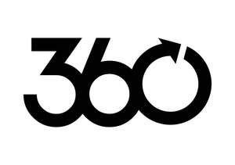
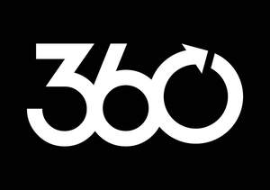

Trade Mark Journal No.2025/043 24 October 2025
UK00004279850 17 October 2025 (37,42)
Mark 1

Mark 2
Mark 3
Mark 4

- Class 37
- Custom construction, repair, installation, integration, commissioning and maintenance of engineering systems, thermal energy systems and fluid or steam control systems; consultancy and advisory services relating to custom construction, repair, installation, integration, commissioning and maintenance of engineering systems, thermal energy systems and fluid or steam control systems.
- Class 42
- Professional consultations and advice relating to engineering, fluid and steam control, and thermal energy; feasibility studies relating to engineering, fluid and steam control, and thermal energy; technological, research and consultation services relating to engineering, fluid and steam control, and thermal energy; testing of installations and apparatus relating to engineering, fluid and steam control, and thermal energy construction drafting, engineering, industrial design and mechanical research; steam quality testing; inspection and audit of engineering systems; inspection and audit of fluid and steam control and thermal energy systems; remotely monitoring, measuring and reporting the condition, efficiency, performance and energy consumption of industrial systems, industrial apparatus, steam systems, components of steam systems, steam traps, valves, filters, strainers, pumps, separators, air compressors, lubricators, regulators, gauges, boilers, boiler systems, heat exchangers, heating installations, steam heaters, and steam producing apparatus, including by means of a secure online portal accessible through a global computer network; providing online non-downloadable software for remotely controlling, metering, monitoring, communicating with and measuring and reporting the efficiency, performance and energy consumption of industrial systems, industrial apparatus, steam systems, components of steam systems, steam traps, valves, filters, strainers, pumps, separators, air compressors, lubricators, regulators, gauges, boilers, boiler systems, heat exchangers, heating installations, steam heaters, and steam producing apparatus, including by means of a secure online portal accessible through a global computer network; installation, updating, maintenance and repair of computer software; professional consultations and advice relating to the remote monitoring and control of industrial systems, steam systems, boiler systems, fluid and steam control equipment, and thermal energy systems; conducting surveys of industrial premises; preparation of technical reports; professional consultations and advice relating to leverage of renewable energy sources, and electric heating for steam generation; advice relating to decarbonisation of steam and thermal energy systems; energy auditing; consultancy and advisory services in the field of energy-saving and energy efficiency; technical verification and technical validation of steam engineering systems; testing of machines and plants; analysis and testing services relating to electrical engineering apparatus; technical and engineering drawing; technical testing and measurement; development integration and prototyping of steam engineering systems; conducting an analysis of premises for the installation of steam engineering systems; technical after-sales support, information and advisory services; technical consultations, advisory and technical survey services; designs and research services; remote monitoring, measuring and reporting the condition, efficiency, performance and energy consumption of steam and thermal energy systems, including by means of a secure online portal accessible through a global computer network; providing online, non-downloadable computer software for remotely controlling, metering, monitoring, communicating with and measuring and reporting the efficiency, performance and energy consumption of steam engineering systems, including by means of a secure online portal accessible through a global computer network; information, advisory and consultancy services relating to the aforesaid services.
Spirax-Sarco Limited
Representative: Haseltine Lake Kempner LLP